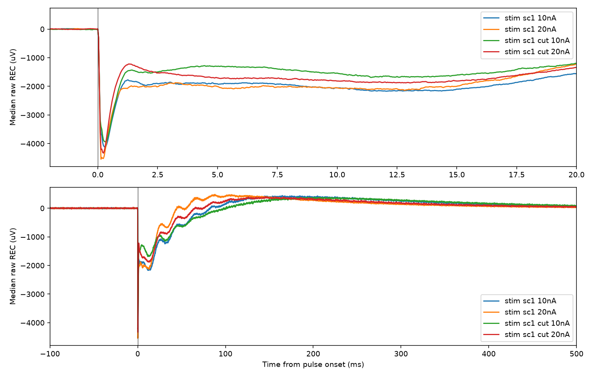
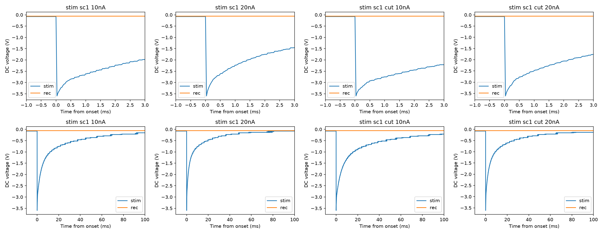

REC A-011, STIM A-004. Compliance flags verified with official Intan decoder. See per-recording compliance counts below. DC waveforms were saved in all recordings. Raw REC includes stimulation artifact. Only timestamp 261108 recordings are included.

[
{
"recording": "stim sc1 10nA_081126_261108_130601",
"current_uA": 0.01,
"pulses": 50,
"compliance_pulses": 0,
"median_flagged_duration_us": 0.0,
"rec_settle_pulses": 50,
"global_settle": "True",
"baseline_filtered_sigma_uV": 34.036272048950195,
"baseline_raw_rms_uV": 37.3309326171875,
"raw_rms_10_100ms_uV": 912.5283813476562,
"raw_rms_100_300ms_uV": 353.4115905761719,
"raw_rms_300_500ms_uV": 168.10684204101562,
"median_peak_0_20ms_uV": 4126.4921875,
"trials_over_5mV": 0,
"initial_baseline_s": 2.3562666666666665,
"timestamp_gaps": 0,
"rec_channel": "A-011",
"dc_saved": 1
},
{
"recording": "stim sc1 20nA_081126_261108_130724",
"current_uA": 0.02,
"pulses": 50,
"compliance_pulses": 0,
"median_flagged_duration_us": 0.0,
"rec_settle_pulses": 50,
"global_settle": "True",
"baseline_filtered_sigma_uV": 31.066325187683105,
"baseline_raw_rms_uV": 33.96104049682617,
"raw_rms_10_100ms_uV": 749.061279296875,
"raw_rms_100_300ms_uV": 300.6615905761719,
"raw_rms_300_500ms_uV": 89.13948059082031,
"median_peak_0_20ms_uV": 4563.14599609375,
"trials_over_5mV": 0,
"initial_baseline_s": 2.3612,
"timestamp_gaps": 0,
"rec_channel": "A-011",
"dc_saved": 1
},
{
"recording": "stim sc1 cut 10nA_081126_261108_130922",
"current_uA": 0.01,
"pulses": 50,
"compliance_pulses": 0,
"median_flagged_duration_us": 0.0,
"rec_settle_pulses": 50,
"global_settle": "True",
"baseline_filtered_sigma_uV": 34.4352970123291,
"baseline_raw_rms_uV": 37.89393615722656,
"raw_rms_10_100ms_uV": 789.8987426757812,
"raw_rms_100_300ms_uV": 297.824951171875,
"raw_rms_300_500ms_uV": 184.8903045654297,
"median_peak_0_20ms_uV": 3949.3349609375,
"trials_over_5mV": 0,
"initial_baseline_s": 2.3489333333333335,
"timestamp_gaps": 0,
"rec_channel": "A-011",
"dc_saved": 1
},
{
"recording": "stim sc1 cut 20nA_081126_261108_131043",
"current_uA": 0.02,
"pulses": 50,
"compliance_pulses": 0,
"median_flagged_duration_us": 0.0,
"rec_settle_pulses": 50,
"global_settle": "True",
"baseline_filtered_sigma_uV": 31.82089614868164,
"baseline_raw_rms_uV": 34.696937561035156,
"raw_rms_10_100ms_uV": 745.0115356445312,
"raw_rms_100_300ms_uV": 303.1585693359375,
"raw_rms_300_500ms_uV": 111.14588165283203,
"median_peak_0_20ms_uV": 4334.4599609375,
"trials_over_5mV": 0,
"initial_baseline_s": 2.3379,
"timestamp_gaps": 0,
"rec_channel": "A-011",
"dc_saved": 1
}
]Post settle 5 ms in all recordings. STIM DC changes about -3.52 V in both intact and cut. At 20 nA raw REC RMS is nearly unchanged in 10-100 and 100-300 ms windows. At 10 nA those windows decrease by 13-16 percent after cut. These are total raw waveform measurements including large artifacts, not spike counts. REC A-011 is selected by its saved custom label. Electrode positions and cut geometry for this session require experimental confirmation for causal interpretation.
